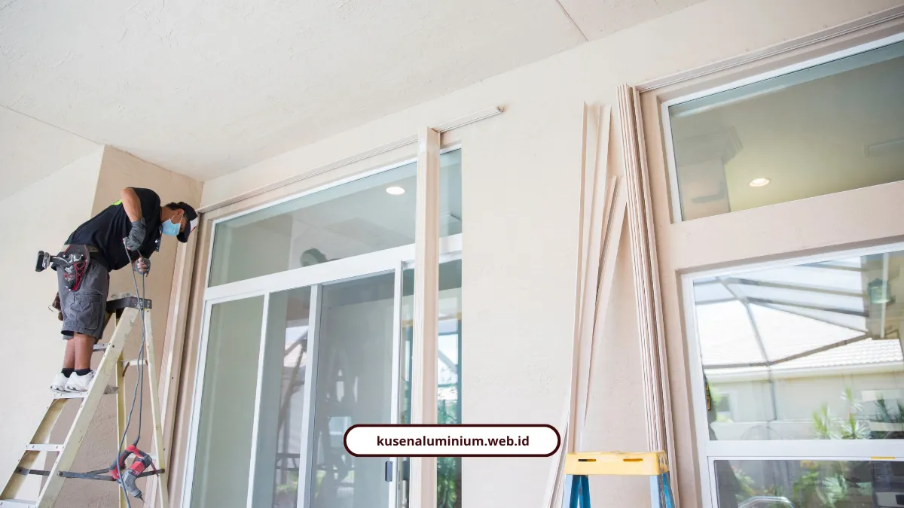

Biaya Pasang Kusen Batu, Rincian per Meter Lari

📌 Ringkasan Inti
Rincian biaya pasang kusen di Kota Batu dirancang transparan dengan perhitungan per meter lari yang jelas, simulasi RAB akurat, serta survei lokasi gratis langsung oleh aplikator berpengalaman:
- Biaya pasang standar kusen mulai Rp80.000 per meter lari (profil 3 inci) dan Rp95.000 per meter lari (profil 4 inci).
- Pilihan material Alexindo berkisar Rp150.000 sampai Rp250.000 per meter terpasang, sedangkan YKK AP kelas premium berkisar Rp250.000 sampai Rp350.000 per meter.
- Perhitungan RAB mengacu pada total keliling bukaan ditambah cadangan anggaran sekitar 5% untuk mengantisipasi dinamika harga bahan baku.
- Ongkos kirim armada ke Kota Batu dihitung secara transparan berdasarkan volume pesanan dan akses jalan, tanpa biaya tersembunyi.
- Material aluminium tahan kelembapan udara dingin Batu, anti lapuk, bebas rayap, dan dilengkapi weather-seal EPDM kedap air hujan.
- Berapa Biaya Pasang Kusen Aluminium di Batu?
- Berapa Harga per Meter Alexindo dan YKK AP?
- Bagaimana Cara Menghitung RAB Kusen?
- Apa yang Bikin Biaya Naik atau Turun?
- Ongkos Kirim ke Batu Berapa?
- Kenapa Aluminium Cocok untuk Rumah di Batu?
- Apa Buktinya dari Pelanggan?
- Estimasi Akurat dan Kepastian Biaya Kusen Batu
Biaya pasang kusen Batu mulai Rp80.000 per meter lari untuk profil 3 inci dan Rp95.000 untuk 4 inci. Melayani Kota Batu, survei gratis. Di bawah ini ada tabel harga, contoh hitungan RAB sampai rupiah terakhir, dan cara kami menghitung ongkos kirim, termasuk hal yang tidak bisa dipukul rata.
Berapa Biaya Pasang Kusen Aluminium di Batu?
Biaya pemasangan standar kami dihitung per meter lari untuk kusen dan per unit untuk daun. Kusen 3 inci Rp80.000 per meter lari, dan kusen 4 inci Rp95.000 per meter lari.
| Pekerjaan | Biaya |
|---|---|
| Kusen 3 inci | Rp80.000 / meter lari |
| Kusen 4 inci | Rp95.000 / meter lari |
| Pemasangan kaca mati | Rp200.000 / meter |
| Daun pintu aluminium | Rp1.500.000 / daun |
| Daun jendela aluminium | Rp650.000 / daun |
Angka ini adalah biaya pemasangan standar. Harga material dan finishing dihitung terpisah pada bagian berikutnya.
Berapa Harga per Meter Alexindo dan YKK AP?
Alexindo (kelas menengah) berkisar Rp150.000 sampai Rp250.000 per meter, termasuk pasang. YKK AP (kelas premium) berkisar Rp250.000 sampai Rp350.000 per meter, termasuk pasang.
Rentangnya lebar karena harga bergeser mengikuti ukuran profil 3 inci atau 4 inci, ketebalan, dan pilihan finishing seperti anodized atau serat kayu. Kekurangannya jujur saja: YKK AP jelas lebih mahal. Untuk rumah tinggal biasa, Alexindo sering sudah cukup.

Bagaimana Cara Menghitung RAB Kusen?
Volume pekerjaan kusen dihitung dari keliling kusen, yaitu jumlah seluruh sisi frame. Total keliling itu lalu dikalikan harga per meter lari.
Contoh Simulasi Perhitungan RAB:
- 1 pintu 90 cm x 220 cm, keliling 5,3 meter (dua sisi tegak dan satu sisi atas, tanpa ambang bawah)
- 1 jendela 80 cm x 170 cm, keliling 5,0 meter
- Total volume: 10,3 meter lari
- Analisa kusen warna 4 inci: Rp190.100 per meter lari, sudah mencakup profil aluminium, sealant, skrup fixer, dan ongkos tukang
- Total biaya pemasangan: 10,3 m × Rp190.100 = Rp1.958.030
Arsitur Team, praktisi teknis arsitektur, menekankan pentingnya menghitung biaya berdasarkan keliling kusen secara detail. Mereka juga menyarankan cadangan anggaran sekitar 5% untuk dinamika harga bahan baku.
Pada contoh di atas, 5% berarti sekitar Rp97.900, sehingga total sekitar Rp2.055.900.
"Perhitungan volume kusen yang akurat dari keliling bukaan ditambah cadangan 5% adalah kunci agar anggaran tidak membengkak di tengah jalan. Di kawasan Batu yang beriklim lembap, presisi pemotongan dan ketebalan material juga menentukan efisiensi biaya perawatan jangka panjang."
Paket Kusen & Jendela Kedap Air Khusus Hunian & Villa Kota Batu
Solusi prefabrikasi kusen aluminium bergaransi resmi langsung dari workshop ke lokasi proyek Kota Batu, sudah termasuk survei dan pengukuran gratis, karet weather-seal EPDM anti tempias, serta instalasi presisi miter 45 derajat.
Apa yang Bikin Biaya Naik atau Turun?
Empat hal utama menentukan angka akhir RAB:
- Merek dan spesifikasi: YKK AP atau Alexindo
- Ukuran profil: 3 inci atau 4 inci
- Finishing: Anodized, Powder Coating, atau Serat Kayu
- Kerumitan bukaan: jendela casement, pintu sliding, atau pintu lipat (folding door)
Semua angka ini berlaku untuk sistem kusen prefabrikasi bergaransi, yaitu dipotong presisi di workshop lalu dipasang di lokasi.
Ongkos Kirim ke Batu Berapa?
Kami tidak memasang tarif tunggal untuk ongkos kirim Batu, karena angkanya memang berbeda tiap proyek. Ongkos dihitung dari kuantitas pesanan, jarak armada dari workshop, dan akses jalan menuju lokasi yang berbukit.
Melayani Kota Batu, kami memfasilitasi mobilisasi material dan survei lokasi tanpa biaya tersembunyi untuk pemesanan set kusen atau bukaan lengkap. Karena berbasis di Malang Raya, jarak tempuh dan respons ke lokasi lebih efisien.
Kenapa Aluminium Cocok untuk Rumah di Batu?
Iklim Batu sejuk, dingin, lembap, dengan curah hujan tinggi. Kusen aluminium tidak lapuk, tidak dimakan rayap, dan tidak memuai atau menyusut ekstrem seperti kayu konvensional.
Karet weather-seal EPDM membantu menahan rembesan air hujan deras dan meredam kebisingan luar. Buat villa dan guesthouse, ini bukan sekadar kenyamanan, tapi juga soal ulasan tamu.
Apa Buktinya dari Pelanggan?
Kami sudah menangani lebih dari 500 bukaan di Malang Raya dengan pengalaman lebih dari 10 tahun. Pemasangan memakai sudut miter 45 derajat, aksesoris stainless steel 304 anti-karat, dan sertifikat garansi pengerjaan serta fungsi kunci.
"Jendela casement Alexindo buatan KUSEN ALUMINIUM Malang hasilnya sangat rapi. Kedap air saat hujan deras dan bising berkurang drastis."
Estimasi Akurat dan Kepastian Biaya Kusen Batu
Biaya pasang kusen bisa dihitung sendiri dari keliling bukaan dikali harga per meter lari, ditambah cadangan 5%. Ongkos kirim menyesuaikan jumlah pesanan, jarak, dan medan, tanpa biaya tersembunyi.
Coba hitung estimasi rumah atau villa Anda lewat estimator biaya, lalu lihat contoh hasilnya di galeri proyek. Pesan survei lokasi gratis lewat WhatsApp, dan kami siap melayani Kota Batu.
FAQ Seputar Biaya Pasang Kusen Batu
Tidak. Survei, pengukuran ulang, dan konsultasi spesifikasi material gratis untuk Kota Batu, Kota Malang, dan Kabupaten Malang.
Sekitar 5% dari total RAB, untuk mengantisipasi penyesuaian harga bahan baku di lapangan.
Ada. Kalkulator estimasi biaya instan tersedia lewat WhatsApp dari halaman utama kusenaluminium.web.id.